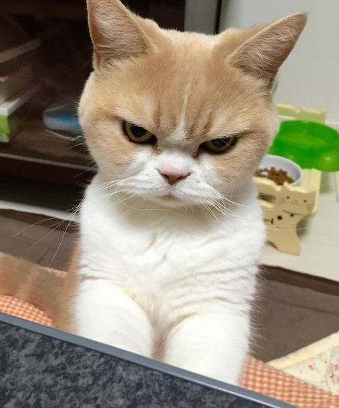

O que você precisa saber antes de adotar um gatinho
Cuidados com alimentação
Cuidados com passeios
Caixinha de areia e higiene
Quais são as vantages de ter um gatinho
O que eles sentem pelo dono
Como é simples cuidar de um gatinho
Maneira de se divertir com o seu gato

Fred
Por que não podemos deixar o gato sair para a rua
Há diversos riscos em deixar o seu gato na rua, como riscos de envenenamento, atropelamento e entre outros. Lembre-se de que gatos são muito curiosos, por isso é importante supervisiona-los sempre que posivel para que não ocorra nenhum desastre.